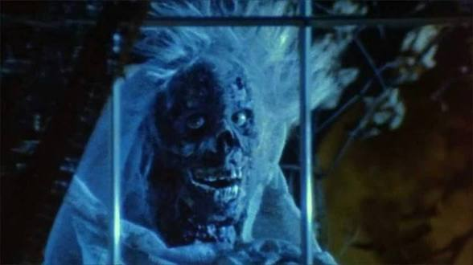

💀 🎂 CREEPSHOW (1982) — CERTIFIED MGC VF-36

🏛 MGC LOWER COURT OF APPEALS
- ASSET TITLE: Creepshow (1982) – The Official EC Comics Anthology Ledger
- OFFICIAL REGISTRY GRADE: Certified MGC VF-36 (VF / Grade Cult Workhorse)
- LOWER COURT JURISDICTION: Judge Tina, Chief of Cult Classics
- CASE FILE: #061
📜 THE FORENSIC NARRATIVE BREAKDOWN & RECOVERY
Tina walks up 👢👢 to the steel bench, tosses an empty bucket of movie-theater popcorn into the trash can 🗑, flips open a dog-eared 1950s horror comic under the flickering neon light, and places this specimen directly under the strict 5x magnifying lens.
🚨 Key Planchet Flaws:
1. High-Grade EC Comics Metallurgy & Primary Color Strike Power
- Under a cold, disciplined forensic review, Creepshow (1982) exhibits monumental strike depth and an unmistakable cult luster. Forged by horror heavyweights George A. Romero and Stephen King, the film successfully translates the lurid, ink-soaked pages of classic 1950s Tales from the Crypt comics directly onto 35mm celluloid.
- The technical presentation is razor-sharp. Saturated primary-color gel lighting—blazing magentas, toxic greens, and blood reds—alongside animated panel transitions gives the film an undeniable collector’s eye appeal. Even under the 5x lens, Tom Savini’s practical gore effects (from waterlogged zombie dads demanding their Father’s Day cake to Ted Danson buried up to his neck at high tide) hold up with rock-solid, professional execution.
2. Anthology Circulation Wear & Pacing Friction
- However, like any anthology planchet, close inspection reveals light circulation wear across its five-part layout engine. Because the film operates as a series of standalone vignettes wrapped in a wraparound frame story, its linear narrative momentum naturally resets every twenty minutes.
- While segments like “The Crate” (anchored by Hal Holbrook, Adrienne Barbeau, and a fur-covered Arctic beast under the stairs) and “Something to Tide You Over” (featuring Leslie Nielsen in a glorious, unhinged villain turn) run at peak velocity, other segments show minor pacing scuffs. “The Lonesome Death of Jordy Verrill”—starring Stephen King himself in full, over-the-top slapstick hillbilly mode covered in glowing space-moss—deliberately pushes the acting calibration straight into cartoon territory, creating a slight tonal drag compared to the tighter, meaner stories.
3. The Definitive VF-36 Cult Workhorse Allocation
- Let the permanent base registry reflect the unvarnished reality: Creepshow avoids any basement-floor scrap penalties thanks to its pure, unpretentious entertainment value, John Harrison’s hypnotic synth-and-piano score, and iconic monster craftsmanship. At the same time, its episodic anthology structure and deliberate camp humor keep it just shy of the XF vaults. It sits proudly at the top of the VF-20 to VF-37 register—the gold standard of 1980s midnight-movie anthologies.
⚖️ THE CHIEF’S FINAL DECREE
- Tina grabs her heavy crescent wrench and brings it down onto the cold steel desk with a deafening, echoing metallic ring!
“Where’s my cake, Bedelia?! Let the ledger show that Romero, King, and Savini minted an absolute horror-comedy classic that still bleeds neon ink decades later!”
- 🔧💥 📖 Case Closed. Certified MGC VF-36

• © 2026 MOVIE GRADING CONSENSUS. All Sovereign Rights Reserved.